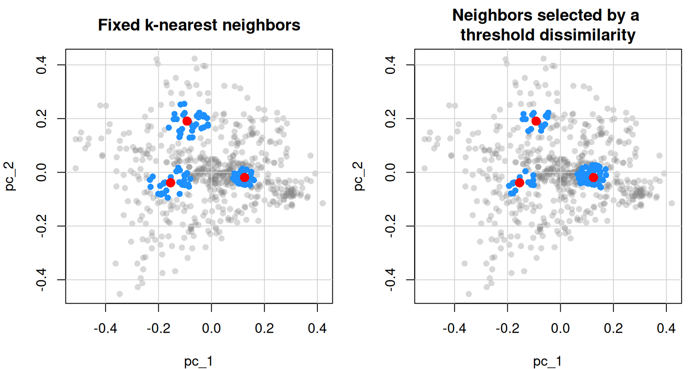
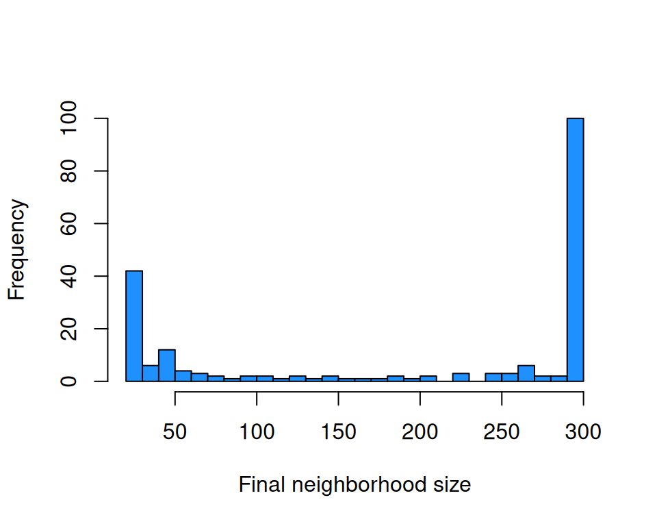

neighbors_k(k = 50)
neighbors_k(k = c(40, 60, 80, 100))We are caught in an inescapable network of mutuality, tied in a single garment of destiny – Martin Luther King Jr

1 Searching for neighbors
In the package, -nearest neighbor search is used to identify, within a reference set of observations, a group of spectrally similar observations for another set of observations. For a given observation, the most similar observations are referred to as its nearest neighbors and are typically identified using dissimilarity measures.
In resemble, k-nearest neighbor search is implemented in the search_neighbors() function. This function relies on dissimilarity() to compute the dissimilarity matrix used to identify the neighbors. If Xu is not provided, the search is performed within Xr itself, while automatically excluding each observation from its own neighborhood.
Neighbors can be selected in two ways, each specified by a constructor function:
-
neighbors_k(): by defining a fixed number of neighbors () -
neighbors_diss(): by defining a dissimilarity threshold ()
Readers are encouraged to review the section on dissimilarity measures first, as it provides the basis for the examples presented in this section.
2 Neighbor selection methods
2.1 Fixed- selection
neighbors_k() selects a fixed number of nearest neighbors for each target observation:
Multiple values of can be provided to evaluate different neighborhood sizes. The minimum allowed value is 4, ensuring sufficient observations for local model fitting.
2.2 Dissimilarity-threshold selection
neighbors_diss() selects neighbors whose dissimilarity falls below a threshold :
neighbors_diss(threshold = 0.3)
neighbors_diss(threshold = c(0.1, 0.2, 0.3), k_min = 10, k_max = 150)The k_min and k_max arguments constrain the neighborhood size. If fewer than k_min neighbors fall below the threshold, the closest k_min observations are retained regardless. If more than k_max qualify, only the closest k_max are kept.
3 Using a specific number of neighbors
This means that the neighboring observations are retained regardless their dissimilarity/distance to the target observation. Each target observation for which its neighbors are to be found ends up with the same neighborhood size (). A drawback of this approach is that observations that are in fact largely dissimilar to the target observation might end up in its neighborhood. This is because the requirement for building the neighborhood is based on its size and not on the similarity of the retained observations to the target one.
Here is an example that demonstrates how search_neighbors() can be used to search in the train_x set the spectral neighbors of the test_x set:
library(resemble)
library(prospectr)
# obtain a numeric vector of the wavelengths at which spectra is recorded
wavs <- as.numeric(colnames(NIRsoil$spc))
# pre-process the spectra:
# - use detrend
# - use first order derivative
diff_order <- 1
poly_order <- 1
window <- 7
# Preprocess spectra
NIRsoil$spc_pr <- savitzkyGolay(
detrend(NIRsoil$spc, wav = wavs),
m = diff_order, p = poly_order, w = window
)
train_x <- NIRsoil$spc_pr[NIRsoil$train == 1, ]
train_y <- NIRsoil$Ciso[NIRsoil$train == 1]
test_x <- NIRsoil$spc_pr[NIRsoil$train == 0, ]
test_y <- NIRsoil$Ciso[NIRsoil$train == 0]First, take three observations from the test set at random and search for their nearest neighbors in the training set using PCA-based dissimilarity with only 2 components and a fixed neighborhood size of 30:
set.seed(8011)
rnd_idc <- sample(nrow(test_x), 3)
k_fixed <- search_neighbors(
Xr = train_x,
Xu = test_x[rnd_idc, ],
diss_method = diss_pca(ncomp = 2, return_projection = TRUE),
neighbors = neighbors_k(30)
)The, for the same 3 observations in the test set, search for their nearest neighbors in the training set using the same previous dissimilarity but use a dissimilarity threshold of 0.25 to reatin the neighbors:
k_diss <- search_neighbors(
Xr = train_x,
Xu = test_x[rnd_idc, ],
diss_method = diss_pca(ncomp = 2),
neighbors = neighbors_diss(threshold = 0.25)
)setting 'k_max' (Inf) to nrow(Xr) (618).Identify the indices of the test observations in the projection space of the PCA-based dissimilarity (their row names always start with “Xu_”):
Plot the projection scores of the training set and highlight the neighbors found with the two methods (fixed and dissimilarity threshold) as well as the test observations:
old_par <- par(no.readonly = TRUE)
on.exit(par(old_par), add = TRUE)
par(mfrow = c(1, 2), mar = c(4, 4, 3, 1))
plot(
k_fixed$projection$scores,
pch = 16,
col = rgb(0.5, 0.5, 0.5, 0.3),
main = "Fixed k-nearest neighbors"
)
grid(lty = 1)
points(
k_fixed$projection$scores[k_fixed$unique_neighbors, ],
pch = 16,
col = "dodgerblue"
)
points(
k_fixed$projection$scores[test_scores_indices, ],
pch = 16,
cex = 1.5,
col = "red"
)
plot(
k_fixed$projection$scores,
pch = 16,
col = rgb(0.5, 0.5, 0.5, 0.3),
main = "Neighbors selected by a \nthreshold dissimilarity"
)
grid(lty = 1)
points(
k_fixed$projection$scores[k_diss$unique_neighbors, ],
pch = 16,
col = "dodgerblue"
)
points(
k_fixed$projection$scores[test_scores_indices, ],
pch = 16,
cex = 1.5,
col = "red"
)
Figure 1 illustrates the difference between the two neighbor-selection strategies. In the fixed-(k) approach, each test sample is assigned the same number of neighbors, but the spatial extent of the resulting neighborhoods varies. For example, one neighborhood is very compact because many similar observations are located close to the test sample, whereas the other two are more dispersed because a larger region must be searched to retrieve the required number of neighbors. In contrast, the dissimilarity-threshold approach produces neighborhoods with a more comparable spatial extent, since neighbors are retained according to a common dissimilarity cutoff rather than a fixed count. As a result, the number of selected neighbors varies across test samples. In Figure 1, the neighborhood of the left test sample is denser and contains more neighbors, whereas the neighborhood of the right test sample is sparser and contains fewer neighbors.
Exploring what the search_neighbors() function returns is useful to understand how the neighbors are stored and how to access them. For example, the following code shows how to access the neighbors found with the fixed- approach:
# matrix of neighbors
k_fixed$neighbors
# matrix of neighbor distances (dissimilarity scores)
k_fixed$neighbors_diss
# the index (in the training set) of the first two closest neighbors found in
# training for the first observation in testing:
k_fixed$neighbors[1:2, 1, drop = FALSE]
# the distances of the two closest neighbors found in
# training for the first observation in testing:
k_fixed$neighbors_diss[1:2, 1, drop = FALSE]
# the indices in training that fall in any of the
# neighborhoods of testing
k_fixed$unique_neighborsIn the above code, k_fixed$neighbors is a matrix showing the results of the neighbors found. This is a matrix of neighbor indices where every column represents an observation in the testing set while every row represents the neighbor index (in descending order). Every entry represents the index of the neighbor observation in the training set. The k_fixed$neighbors_diss matrix shows the dissimilarity scores corresponding to the neighbors found. For example, for the first observation in test_x its closest observation found in train_x corresponds to the one with index k_fixed$neighbors[1, 1] which has a dissimilarity score of k_fixed$neighbors_diss[1, 1].
Note that in the method where neighbors are selected by a threshold dissimilarity, the matrix k_diss$neighbors will contain many NA values because the number of neighbors retained for each observation in testing is not constant. The number of neighbors retained for each observation in testing can be easily visualized with a histogram on k_diss$k_diss_info$final_n_k.
Neighbor search can also be conducted with all the dissimilarity measures described in previous sections. The neighbors retrieved will then depend on the dissimilarity method used. Thus, it is recommended to evaluate carefully what dissimilarity metric to use before neighbor search.
Here are other examples of neighbor search based on other dissimilarity measures:
# using PC dissimilarity with optimal selection of components
knn_opc <- search_neighbors(
Xr = train_x,
Xu = test_x,
diss_method = diss_pca(
ncomp = ncomp_by_opc(),
scale = TRUE,
return_projection = TRUE
),
Yr = train_y,
neighbors = neighbors_k(50)
)
# using PLS dissimilarity with optimal selection of components
knn_pls <- search_neighbors(
Xr = train_x,
Xu = test_x,
diss_method = diss_pls(
ncomp = ncomp_by_opc(),
scale = TRUE
),
Yr = train_y,
neighbors = neighbors_k(50)
)
# using correlation dissimilarity
knn_cor <- search_neighbors(
Xr = train_x,
Xu = test_x,
diss_method = diss_correlation(),
neighbors = neighbors_k(50)
)
# using moving window correlation dissimilarity
knn_mw <- search_neighbors(
Xr = train_x,
Xu = test_x,
diss_method = diss_correlation(ws = 51),
neighbors = neighbors_k(50)
)4 Using a dissimilarity threshold
Here, the neighboring observations to be retained must have a dissimilarity score less or equal to a given dissimilarity threshold (). Therefore, the neighborhood size of the target observations is not constant. A drawback with this approach is that choosing a meaningful can be difficult, especially because its value is largely influenced by the dissimilarity method used. Thresholds are not comparable across methods: a threshold of 0.3 for correlation dissimilarity has no correspondence to 0.3 for Euclidean or PCA-based dissimilarity. Thresholds must be calibrated empirically for each method.
Furthermore, without bounds, some neighborhoods retrieved by certain thresholds might be of a very small size or even empty, which constrains any type of analysis within such neighborhoods. On the other hand, some neighborhoods might end up with large sizes which might include either redundant observations or in some other cases where is too large the complexity in the neighborhood might be large.
In neighbors_diss(), is controlled by the argument threshold. This argument is accompanied by the arguments k_min and k_max which are used to control the minimum and maximum neighborhood sizes. For example, if a neighborhood size is below the minimum size k_min, the function automatically ignores and retrieves the k_min closest observations. Similarly, if the neighborhood size is above the maximum size k_max, the function automatically ignores and retrieves only a maximum of k_max neighbors.
In the package, we can use search_neighbors() to find in the train_x set the neighbors of the test_x set which dissimilarity scores are less or equal to a user-defined threshold:
# a dissimilarity threshold
d_th <- 1
# the minimum number of observations required in each neighborhood
k_min <- 20
# the maximum number of observations allowed in each neighborhood
k_max <- 300
dnn_pca <- search_neighbors(
Xr = train_x,
Xu = test_x,
diss_method = diss_pca(scale = TRUE),
neighbors = neighbors_diss(threshold = d_th, k_min = k_min, k_max = k_max)
)
# matrix of neighbors. The minimum number of indices is 20 (given by k_min)
# and the maximum number of indices is 300 (given by k_max).
# NAs indicate "not a neighbor"
dnn_pca$neighbors
# this reports how many neighbors were found for each observation in
# testing using the input distance threshold (column n_k) and how
# many were finally selected (column final_n_k)
dnn_pca$k_diss_info
# matrix of neighbor distances
dnn_pca$neighbors_diss
# the indices in training that fall in any of the
# neighborhoods of testing
dnn_pca$unique_neighborsIn the code above, the size of the neighborhoods is not constant, the size variability can be easily visualized with a histogram on dnn_pca$k_diss_info$final_n_k (Figure 2). The histogram shows that many neighborhoods were reset to a size of k_min or to a size of k_max.
hist(
dnn_pca$k_diss_info$final_n_k,
breaks = 20,
xlab = "Final neighborhood size",
main = "",
col = "dodgerblue"
)
5 Spiking the neighborhoods
In the package, spiking refers to forcing specific observations to be included in the neighborhoods. For example, if we are searching in the train_x set the neighbors of the test_x set, and if we want to force certain observations in train_x to be included in the neighborhood of each observation in test_x, we can use the spike argument in search_neighbors(). For that, in this argument we will need to pass the indices of train_x that will be forced into the neighborhoods. Positive indices are forced into all neighborhoods; negative indices are excluded from all neighborhoods.
The following example demonstrates how to do that:
# the indices of the observations that we want to "invite" to every neighborhood
forced_guests <- c(1, 5, 8, 9)
# using PC dissimilarity with optimal selection of components
knn_spiked <- search_neighbors(
Xr = train_x,
Xu = test_x,
diss_method = diss_pca(
ncomp = ncomp_by_opc(20)
),
Yr = train_y,
neighbors = neighbors_k(50),
spike = forced_guests
)
# check the first 8 neighbors found in training for the
# first 2 observations in testing
knn_spiked$neighbors[1:8, 1:2] Xu1 Xu2
k_1 1 1
k_2 5 5
k_3 8 8
k_4 9 9
k_5 526 222
k_6 487 514
k_7 279 243
k_8 370 353The previous code shows that the indices specified in forced_guests are always selected as part of every neighborhood.
Spiking may be useful when prior knowledge indicates that certain observations should always be considered (for example, calibration standards or known reference samples) regardless of their spectral dissimilarity.